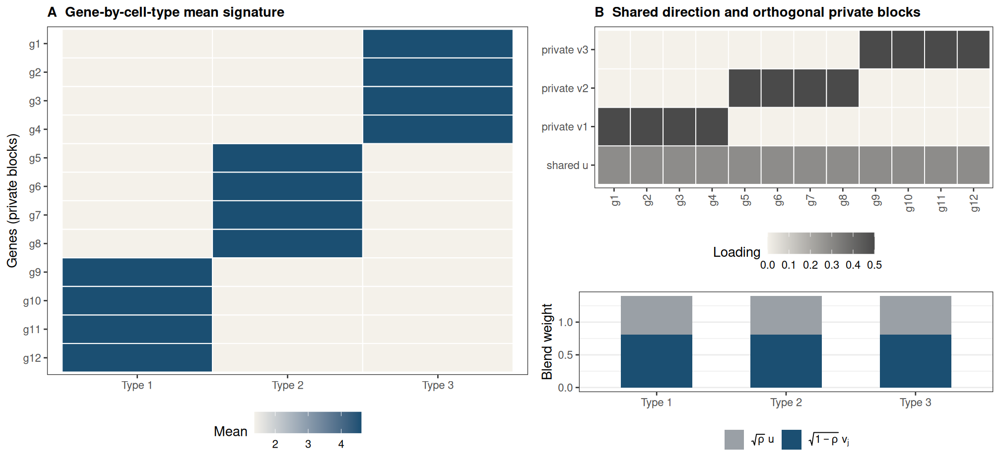
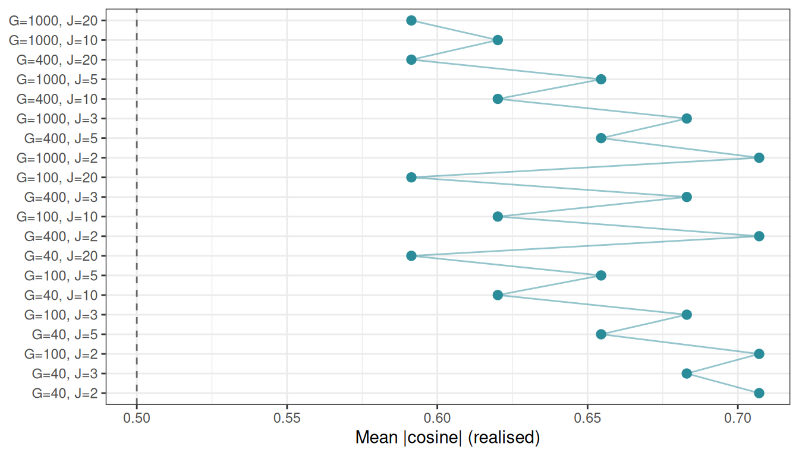
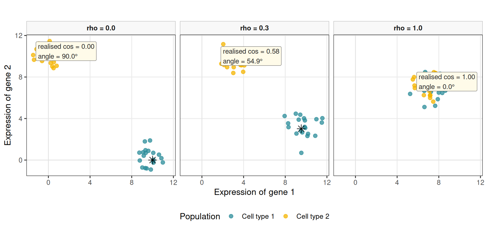

%%{init: {"theme": "sandstone"}}%%
flowchart LR
A["Graph G"] --> B["Weights W(G)"]
B --> C["Precision Ω ≻ 0"]
C --> D["Σ = Ω^{-1}"]
E["Means μ_j\n(AutoGeneS-style ρ)"] --> F["simulate_hierarchical_grn_moments()"]
D --> F
F --> G["simulate_bulk_mixture()"]
G --> H["deconvolute_ratios()"]
Simulating semi-synthetic pseudo-bulk mixtures for benchmarking
2026-08-17
Source:vignettes/synthetic-scenarios.qmd
Overview
This vignette documents the synthetic first- and second-order moment generator simulate_hierarchical_grn_moments() and how its outputs feed bulk mixture simulation. Mean profiles follow an AutoGeneS-inspired construction (Aliee and Theis 2021) in which a single dial \rho (target_cosine) sets pairwise collinearity between cell-type columns of \boldsymbol{\mu}, while a fixed scale s (mean_scale) sets column norms. Prefer varying \rho across scenarios when precision weights already control second-order dependence.
Each cell type carries its own graph-constrained signed precision \boldsymbol{\Omega}_j, mapped to \boldsymbol{\Sigma}_j=\boldsymbol{\Omega}_j^{-1}. An undirected Gaussian Markov simulation separates four layers (Equation 12): graph G_j, signed weights W(G_j), SPD precision \Omega_j, and latent Gaussians (an optional observation layer can add Poisson–log-normal or zero-inflated counts). The graph and the precision must not be conflated: a binary adjacency is almost never itself positive definite. DeCovarT draws G_j via generate_random_network_skeleton(), completes \Omega_j\succ 0 with build_normalised_precision(), and stacks the inverted slices with build_covariance_array_from_precision(). Section 4 develops the topology, weight, and SPD design in detail.
Pipeline API
The exported entry point orchestrates internal helpers and returns moments that can be passed to simulate_bulk_mixture() and then to any deconvolution routine exposed by deconvolute_ratios().
library(DeCovarT)
set.seed(42)
moments <- simulate_hierarchical_grn_moments(
n_genes = 40L,
n_celltypes = 3L,
mean_scale = 10,
target_cosine = 0.1,
precision_shift = 0.1,
precision_scale = 0.3,
prop_inhibitory = 0.5,
graph_model = "scale_free"
)
moments$objectives
#> $mean_abs_cosine
#> [1] 0.3315284
#>
#> $sum_euclidean_distance
#> [1] 34.68786
bulk <- simulate_bulk_mixture(
signature_matrix = moments$mean_profiles,
Sigma = moments$covariance_matrices,
p = c(0.5, 0.3, 0.2),
n = 20
)
dim(bulk$Y)
#> [1] 40 20
dim(bulk$latent_profiles) # G x J x N latent draws; input mu is shared
#> [1] 40 3 20Selecting genes (or, here, designing \boldsymbol{\mu}) by cosine alone is insufficient for stable deconvolution (Aliee and Theis 2021). In the scenarios of this package we therefore hold mean_scale fixed and dial only target_cosine, so first-order scale and second-order precision weights stay comparable across runs.
Mathematical roles of the generators
Mean signature: generate_mean_signature_matrix()
Notation: G genes, J cell types indexed by j=1,\ldots,J, and columns \boldsymbol{\mu}_{\cdot j}\in\mathbb{R}^{G} of the mean signature. Fix the column scale s (mean_scale, default 10 in the nine-scenario grid) and dial only the target cosine \rho\in[0,1] (target_cosine).
Let \boldsymbol{u}=G^{-1/2}\mathbf{1}_{G} be the shared unit direction and let \boldsymbol{v}_{j} be the \ell_2-normalised indicator of the gene block assigned to type j (disjoint partition of \{1,\ldots,G\}). Then \boldsymbol{v}_{j}^{\mathsf{T}}\boldsymbol{v}_{k}=0 for j\neq k. Each column is the normalised blend
\tilde{\boldsymbol{\mu}}_{\cdot j} = \sqrt{\rho}\,\boldsymbol{u} +\sqrt{1-\rho}\,\boldsymbol{v}_{j}, \qquad \boldsymbol{\mu}_{\cdot j} = s\, \frac{\tilde{\boldsymbol{\mu}}_{\cdot j}}{ \|\tilde{\boldsymbol{\mu}}_{\cdot j}\|_2 }, \qquad j=1,\ldots,J. \tag{1}
Stacking the un-normalised columns yields a rank-one shared term plus a block-sparse private term:
\tilde{\boldsymbol{M}} = \bigl[ \tilde{\boldsymbol{\mu}}_{\cdot 1} \mid \cdots \mid \tilde{\boldsymbol{\mu}}_{\cdot J} \bigr] = \sqrt{\rho}\, \boldsymbol{u}\mathbf{1}_{J}^{\mathsf{T}} + \sqrt{1-\rho}\, \mathbf{V}, \tag{2}
where \mathbf{V}=\bigl[\boldsymbol{v}_{1}\mid\cdots\mid\boldsymbol{v}_{J}\bigr] has disjoint supports across columns (each \boldsymbol{v}_j is non-zero only on block j). The shared part is rank one; the private part is block-diagonal in the gene-partition sense. After column normalisation and scaling,
\boldsymbol{\mu} = s\,\tilde{\boldsymbol{M}}\, \mathbf{D}^{-1}, \qquad \mathbf{D}=\mathrm{diag}\bigl( \|\tilde{\boldsymbol{\mu}}_{\cdot 1}\|_2, \ldots, \|\tilde{\boldsymbol{\mu}}_{\cdot J}\|_2 \bigr), \tag{3}
so \boldsymbol{\mu} is a low-rank-plus-block construction followed by per-column calibration. This matches synthetic signature designs that combine a common baseline with type-specific marker programmes (Aliee and Theis 2021; Schelker et al. 2017; Ba et al. 2026).
Expanding the un-normalised inner product for j\neq k gives the exact identity
\tilde{\boldsymbol{\mu}}_{\cdot j}^{\mathsf{T}} \tilde{\boldsymbol{\mu}}_{\cdot k} = \rho + \sqrt{\rho(1-\rho)}\, \bigl( \boldsymbol{u}^{\mathsf{T}}\boldsymbol{v}_{j} + \boldsymbol{u}^{\mathsf{T}}\boldsymbol{v}_{k} \bigr), \tag{4}
because \boldsymbol{u}^{\mathsf{T}}\boldsymbol{u}=1 and \boldsymbol{v}_{j}^{\mathsf{T}}\boldsymbol{v}_{k}=0. Block indicators are not orthogonal to the shared direction: if block j contains L_j genes then
\boldsymbol{u}^{\mathsf{T}}\boldsymbol{v}_{j} = \sqrt{\frac{L_j}{G}}, \tag{5}
so Equation 4 becomes
\tilde{\boldsymbol{\mu}}_{\cdot j}^{\mathsf{T}} \tilde{\boldsymbol{\mu}}_{\cdot k} = \rho + \sqrt{\rho(1-\rho)}\, c_{jk}, \qquad c_{jk} = \sqrt{\tfrac{L_j}{G}} + \sqrt{\tfrac{L_k}{G}}. \tag{6}
Column-wise renormalisation in Equation 1 maps this to a realised cosine that is not exactly \rho for finite G and J:
\cos\bigl( \boldsymbol{\mu}_{\cdot j}, \boldsymbol{\mu}_{\cdot k} \bigr) = \frac{ \rho + \sqrt{\rho(1-\rho)}\,c_{jk} }{ 1 + \sqrt{\rho(1-\rho)}\,c_{jk} }, \qquad j\neq k. \tag{7}
Asymptotic cosine control
For equal blocks (L_j\approx G/J) we have c_{jk}\approx 2/\sqrt{J}. Writing the bias relative to the target,
\cos\bigl( \boldsymbol{\mu}_{\cdot j}, \boldsymbol{\mu}_{\cdot k} \bigr) - \rho = \frac{ (1-\rho)\sqrt{\rho(1-\rho)}\,c_{jk} }{ 1 + \sqrt{\rho(1-\rho)}\,c_{jk} } = O\!\bigl(J^{-1/2}\bigr) = o(1) \quad\text{as }J\to\infty \tag{8}
(with G/J bounded away from zero). Equivalently,
\lim_{J\to\infty} \cos\bigl( \boldsymbol{\mu}_{\cdot j}, \boldsymbol{\mu}_{\cdot k} \bigr) = \rho, \tag{9}
so the cross terms in Equation 4 become negligible relative to \rho and the realised pairwise cosine tracks the dial asymptotically. The scale s sets column norms without changing angles: \|\boldsymbol{\mu}_{\cdot j}-\boldsymbol{\mu}_{\cdot k}\|_2\propto s at fixed \rho. We keep s=10 across scenarios and only vary \rho. Figure 3 illustrates the finite-sample approach to \rho=0.5 on a 3\times 3 grid of (J,G).
Figure 2 gives a toy schematic for J=3 cell types: a uniform shared component, three orthogonal private blocks, and the resulting mean directions.

Visualising the cosine construction

Figure 4 visualises the same three operating points (\rho\in\{0,\,0.3,\,1\}) for G=2 genes and J=2 cell types. Cell type 1 is fixed along the positive gene-1 axis; only the angular position of cell type 2 is varied so that \rho=0 is exactly orthogonal. Independent Gaussian noise is added only in this vignette chunk around each centroid (N=20 i.i.d. draws per population) to emulate within-type dispersion under an independence assumption, without altering the mean-signature generator itself. Coloured arrows mark each type’s mean direction; the shaded wedge is the angle between the two means.
This illustration is inspired by panel B in the AutoGeneS paper (Aliee and Theis 2021), but focuses here on the cosine-angle control induced by Equation 1 (without modelling centroid-distance optimisation). With only two genes the cross terms in Equation 4 are large, so the realised cosine from the generator is a warped but strictly increasing map of \rho; the panels below enforce the target angle geometrically after generation.

AutoGeneS (Aliee and Theis (2021)).
Related signature constructions
Blending a common baseline with type-specific markers is standard in deconvolution benchmarking. AutoGeneS (Aliee and Theis 2021) selects genes by jointly minimising inter-type correlation and maximising centroid distance; its simulations use a similar shared-plus-private logic to control signature geometry. Schelker et al. (Schelker et al. 2017) build tumour-derived reference gene expression profiles from single-cell RNA-seq clusters and marker genes, then simulate bulk mixtures by combining those columns—empirically a shared baseline plus distinct marker programmes per immune cell type.
The DICEPro framework (Ba et al. 2026) targets incomplete reference matrices in supervised deconvolution. Its simulation engine generates synthetic signature matrices from multivariate Gaussian (or Poisson) models with a prescribed correlation structure; a bloc=TRUE option enforces block sparsity by zeroing expression outside type-specific gene blocks—closely analogous to the private indicators \boldsymbol{v}_j in Equation 2. DICEPro then optimises reference signatures when cell types are missing from the matrix, complementing the controlled \rho-dial we use here for method comparison under known ground truth.
Objectives: compute_mean_profile_objectives()
For columns of \boldsymbol{\mu},
\overline{\lvert\cos\rvert} = \frac{2}{J(J-1)} \sum_{1\le j<k\le J} \Biggl| \frac{ \boldsymbol{\mu}_{\cdot j}^{\mathsf{T}} \boldsymbol{\mu}_{\cdot k} }{ \|\boldsymbol{\mu}_{\cdot j}\|_2\, \|\boldsymbol{\mu}_{\cdot k}\|_2 } \Biggr|,
D_{\mathrm{Euc}} = \sum_{1\le j<k\le J} \|\boldsymbol{\mu}_{\cdot j}-\boldsymbol{\mu}_{\cdot k}\|_2.
AutoGeneS treats the first as a quantity to minimise and the second as a quantity to maximise (Aliee and Theis 2021). Cosine is preferred to Pearson correlation so that collinear but unequally scaled profiles remain penalised.
Perspectives: a single geometric score for \boldsymbol{\mu}
The present API exposes two AutoGeneS-style objectives. A natural refinement is to replace them by one scalar that jointly rewards large column norms (and hence Euclidean separation) and penalises alignment.
Two candidates are immediate. The Gram determinant
V(\boldsymbol{\mu}) = \sqrt{ \det\bigl( \boldsymbol{\mu}^{\mathsf{T}}\boldsymbol{\mu} \bigr) } \tag{10}
is the volume of the parallelepiped spanned by the columns of \boldsymbol{\mu}. It vanishes under exact collinearity and grows when columns lengthen or become more orthogonal—precisely the desired MOO trade-off in one number.
Equivalently, the reciprocal condition number
\kappa_2(\boldsymbol{\mu})^{-1} = \frac{\sigma_{\min}(\boldsymbol{\mu})}{\sigma_{\max}(\boldsymbol{\mu})}, \tag{11}
available in R via kappa(mean_profiles, exact = TRUE) (or 1 / kappa(...)), measures how ill-posed linear recovery of \boldsymbol{p} from \boldsymbol{y}\approx\boldsymbol{\mu}\boldsymbol{p} is. Maximising \kappa_2(\boldsymbol{\mu})^{-1} (or minimising \kappa_2(\boldsymbol{\mu})) collapses cosine and distance into a deconvolution-centric criterion without a Pareto front.
A practical next step is to expose an optional mean_objective = c("autogenes", "volume", "condition") in simulate_hierarchical_grn_moments(), keep the constructive (\rho,s) generator for controllable scenarios, and report the chosen scalar alongside the existing pairwise diagnostics.
Undirected Gaussian Markov network generation
G \longrightarrow W(G) \longrightarrow \Omega \succ 0 \longrightarrow X_i \sim \mathcal{N}_p(\mu_i,\Omega^{-1}) \tag{12}
Here G is an undirected graph, W(G) a symmetric weighted matrix with the same off-diagonal support, \Omega a strictly positive-definite precision, and X_i an expression profile. This section covers undirected Gaussian Markov / precision-graph simulation only. generate_random_network_skeleton() draws G; build_normalised_precision() completes it to \Omega\succ 0 by an affine spectral shift; build_covariance_array_from_precision() maps each slice \boldsymbol{\Sigma}_j=\boldsymbol{\Omega}_j^{-1} (cell types need not share one network).
%%{init: {"theme": "sandstone"}}%%
flowchart LR
G["Undirected graph G"] --> W["Signed weights W(G)"]
W --> Omega["SPD precision Ω"]
Omega --> Latent["Latent Gaussian X"]
Mu["Mean design μ"] --> Latent
Latent --> Obs["Observation layer"]
Latent -.-> Obs
Graph structure generators
\rho_{jk\mid -\{j,k\}} = -\frac{\Omega_{jk}}{\sqrt{\Omega_{jj}\Omega_{kk}}} \tag{13}
Table 1 compares the main undirected topology families used in GGM benchmarks, with R entry points. Figure 6 sketches the six families most often used in random-like network structure generation.
| Structure | Definition and controls | R entry points | Advantages | Limitations |
|---|---|---|---|---|
| Erdős–Rényi | Each edge present independently with probability q; q=d_{\mathrm{avg}}/(p-1) targets average degree |
huge::huge.generator(graph="random") (Jiang et al. 2026); BDgraph::graph.sim(graph="random") (Mohammadi and Wit 2025); DeCovarT graph_model = "erdos_renyi"
|
Exact sparsity control in expectation; few nuisance parameters | Narrow degree distribution; little modular organisation |
| Band / AR | Edge j–k if 1\le\lvert j-k\rvert\le b |
huge.generator(graph="band") (Jiang et al. 2026); BDgraph::bdgraph.sim(graph="AR(1)") / "AR(2)" (Mohammadi and Wit 2025)
|
Local dependence and controlled max degree | Artificial gene ordering; no hubs or modules |
| Hub / star | g groups; one centre linked to remaining members |
huge.generator(graph="hub") (Jiang et al. 2026); graph.sim(graph="hub") / "star" (Mohammadi and Wit 2025); DeCovarT graph_model = "hub"
|
Stress-tests high-degree regulators | Pure stars omit cross-talk |
| Scale-free | Preferential attachment (e.g. Barabási–Albert with m edges per new node) |
huge.generator(graph="scale-free") (Jiang et al. 2026); DeCovarT graph_model = "scale_free"
|
Heterogeneous degrees | Weak modularity under plain BA growth |
| Cluster / SBM | Within-block edge probability exceeds between-block |
huge.generator(graph="cluster") (Jiang et al. 2026); DeCovarT graph_model = "stochastic_block_model"
|
Pathway / module structure | Equal blocks can be unrealistically regular |
| Small-world / lattice / circle | High clustering with short paths, or fixed neighbourhoods | DeCovarT graph_model = "small_world" (Watts–Strogatz); BDgraph::graph.sim(graph="smallworld") (Mohammadi and Wit 2025)
|
Local modules and spatial organisation | Narrow degrees; needs a defensible ordering |
Biological relevance of the six families
Not every topology is equally useful as a gene-regulatory prior. The three simulation studies in Table 3, together with classical network biology, suggest the following reading.
| Family | Biological reading | Why it matters for DeCovarT |
|---|---|---|
| Star / hub | Master-regulator TF with many targets; one-to-many signalling | Stress-tests recovery of a few high-degree hubs that dominate partial correlations (Wu and Luo 2022; Federico et al. 2023) |
| Scale-free (BA) | Preferential attachment produces a heavy-tailed degree distribution and several hubs (Barabási and Albert 1999) | Standard high-dimensional GGM stress test used by SILGGM via huge (Zhang et al. 2018); useful for testing degree heterogeneity, but not a default empirical model of gene regulation |
| Cluster / SBM | Co-regulated modules / pathways with dense within-block links | Matches pathway organisation; BLGGM’s global block partition is SBM-like before finer within-block motifs (Wu and Luo 2022) |
| Small-world | High local clustering with short paths (ring + shortcuts) | Local co-expression neighbourhoods plus long-range regulatory shortcuts; useful when modularity is soft rather than hard blocks (Federico et al. 2023) |
| Band / AR | Ordered local dependence only | Useful numerical control, but gene indices rarely encode a natural order—limited biological fidelity (Zhang et al. 2018) |
| Erdős–Rényi | Homogeneous random wiring | Null / baseline sparsity; little pathway or hub structure (Zhang et al. 2018) |
The scale-free hypothesis: a useful stress test, not a biological default
The phrase scale-free network usually means that the degree distribution follows a power law, \Pr(K=k)\propto k^{-\alpha}, at least above a lower cut-off. This statistical statement is distinct from the Barabási–Albert (BA) growth mechanism. Preferential attachment can generate a power law, but observing a heavy-tailed degree distribution does not establish preferential attachment; other mechanisms can produce similar tails, and variants of preferential attachment need not produce a pure power law (Lima-Mendez and van Helden 2009; Broido and Clauset 2019).
Whether biological networks are scale-free has therefore remained contested. Early claims often relied on approximately straight log–log degree plots. Such plots are not goodness-of-fit tests: binning, the plotting scale, a small number of hubs, and incomplete or biased sampling can all make non-power-law distributions appear linear. The underlying graph representation matters as well. For example, pool metabolites can become artificial hubs in metabolic graphs, while protein-interaction networks depend strongly on the assay and sampling scheme (Lima-Mendez and van Helden 2009). A power law should instead be fitted to the discrete degree data, tested for plausibility, and compared on the same support with alternatives such as log-normal, exponential, stretched-exponential, and power-law-with-cut-off distributions.
The evidence is not uniformly negative. Using adjacency-spectrum distributions rather than degree alone, Takahashi and colleagues classified eight protein–protein interaction networks as scale-free (Takahashi et al. 2012). Importantly, this was a relative model-selection result: BA-like networks fitted better than the two candidate alternatives, Erdős–Rényi and Watts–Strogatz networks. It did not show that a power law was an adequate absolute model, that preferential attachment generated the observed networks, or that unobserved interactions would preserve the classification. The authors explicitly noted both the restricted candidate set and possible sampling artefacts.
A broader test of 928 real-world network data sets reached a more cautious conclusion (Broido and Clauset 2019). Across all domains, only 4% met the strongest scale-free criterion, whereas a log-normal distribution fitted as well as or better than a power law for 88% of degree distributions. Among the biological networks, 63% showed neither direct nor indirect evidence of scale-free structure, although 6% met the strongest criterion, principally metabolic networks. These proportions depend on the network corpus and the operational definition of scale-freeness, but they reject a universal scale-free law rather than excluding scale-free structure from every biological system.
Evidence from the literature
Table 3 summarises how recent simulation studies combine topology, precision construction, and mean / observation models.
| Source | Graph structures | Precision construction | Mean / observation | Purpose |
|---|---|---|---|---|
| PLNnetwork (Chiquet et al. 2018) | Erdős–Rényi, preferential attachment, affiliation | \Omega = vG + \operatorname{diag}(\lvert\lambda_{\min}(vG)\rvert + u) | Latent log-abundance XB; compositional / multinomial counts | Count-network estimators under compositionality |
| SILGGM (Zhang et al. 2018) | Band, hub, Erdős–Rényi, scale-free via huge
|
Package covariance / precision simulation | Centred Gaussian; focus on precision entries | Large-p inferential and computational stress tests |
| BLGGM (Wu and Luo 2022) | Block mixtures of dense, circle, star, signed modules | Module matrices with structured signed off-diagonals | Cell-type-specific \mu_k, \Omega_k; expression-dependent dropout | Joint clustering, heterogeneous networks, zero inflation |
Several conclusions follow.
- Band is not intrinsically a random-graph model: its support is usually deterministic once the bandwidth is fixed (edge weights and signs may still be random). Hub constructions are often partly deterministic as well. Erdős–Rényi, preferential attachment, and stochastic block models are genuinely stochastic.
- A positive off-diagonal entry in \Omega encodes a negative partial correlation (Equation 13). Uniformly positive precision weights therefore induce uniformly negative edgewise partial correlations; random or signed biological weights are needed when activation-like and inhibition-like associations matter.
- These models target undirected conditional dependence. Federico and colleagues prefer a Markov-network representation when observational data do not justify edge directionality (Federico et al. 2023).
- BLGGM as a hybrid topology design. Wu and Luo’s simulation can be read as two nested layers (Wu and Luo 2022). At the global scale, genes are partitioned into blocks (a stochastic-block–like partition). Within each block, a finer local topology is specified—dense clique-like modules, circles, stars / hubs, or signed dense substructures—so that different blocks can stand for distinct regulatory regimes (e.g. dense co-expression programmes, cyclic signalling motifs, master-regulator hubs). Signs can also differ across modules or cell types. This is richer than a flat ER draw, yet still fully undirected.
For DeCovarT, a BA graph should consequently be interpreted as a deliberately demanding hub-heterogeneity benchmark. It tests whether covariance estimation and deconvolution recover a few high-degree vertices without claiming that a gene-regulatory network grew by preferential attachment. Results should be compared with density-matched SBM, small-world, star, and Erdős–Rényi scenarios. Conclusions that depend only on the BA scenario should be labelled topology-specific; hub recovery, robustness to vertex removal, and biological realism do not follow from a fitted heavy tail alone.
BLGGM as a hybrid. Wu and Luo combine an SBM-like global gene partition with local dense, circle, star, or signed modules inside blocks (Wu and Luo 2022). Distinct local motifs can stand for distinct processes (e.g. master-regulator stars vs dense co-expression programmes). DeCovarT’s exported generators currently expose the three families most useful as standalone benchmarks: scale_free, stochastic_block_model, and small_world.

Weight design and random signs
Topology generators return a binary undirected support E. Signs and magnitudes are a separate design layer W(G) in Equation 12: they are assigned after (or jointly with) the skeleton, then completed to an SPD precision. Remember that
\operatorname{sign}(\rho_{jk\mid -\{j,k\}}) = -\operatorname{sign}(\Omega_{jk}) \tag{14}
see Equation 13, so a positive precision weight is an inhibitory partial correlation. Table 4 contrasts three standard undirected strategies.
| Approach | What is randomised | How \Omega is obtained | When to use |
|---|---|---|---|
| i.i.d. edge signs | For each \{j,k\}\in E, draw s_{jk}\in\{-1,+1\} (e.g. fair coin or \mathbb{P}(+)=\pi) and magnitude m_{jk}>0; set W_{jk}=W_{kj}=s_{jk}m_{jk} | Support-preserving SPD map of W (spectral shift, diagonal dominance, …) | Simple signed ER / hub / SBM benchmarks; explicit control of the inhibitory fraction |
| Partial-correlation scaling | Fill a symmetric matrix R with R_{jk}=0 off E and R_{jk}\in(-1,1) (signed) on E; ensure \rho(R)<1 | \Omega = D^{1/2}(I-R)D^{1/2} (Equation 17) | Direct control of partial-correlation signs and strengths |
G-Wishart (BDgraph::rgwish()) |
Continuous random \Omega on the fixed graph zeros | \Omega\sim W_G(b,D) already SPD (Mohammadi and Wit 2025, 2019) | Heterogeneous random weights without hand-tuned magnitudes; Bayesian-style replicates |
i.i.d. signs on a fixed skeleton
Draw G (ER, band, hub, …). Independently for each undirected edge,
W_{jk}=W_{kj}=s_{jk}\,m_{jk}, \qquad s_{jk}\in\{-1,+1\}, \quad m_{jk}>0, \tag{15}
then apply a support-preserving SPD completion (next section). Uniform positive loadings W=vG are the special case s_{jk}\equiv +1 used by PLN-style and many huge simulations (Chiquet et al. 2018)—all partial correlations then share the same sign. DeCovarT uses i.i.d. signs with inhibitory fraction prop_inhibitory and magnitude v (precision_scale) baked into \boldsymbol{W} before the spectral SPD completion.
Partial-correlation scaling and why I-R
In a Gaussian Markov model the matrix of partial correlations (with ones on the diagonal) relates to the precision by a diagonal congruence. Write the off-diagonal partial correlations as a symmetric matrix R with
R_{jj}=0, \qquad R_{jk} = \begin{cases} \rho_{jk\mid -\{j,k\}} & \{j,k\}\in E,\\ 0 & \{j,k\}\notin E, \end{cases} \tag{16}
and choose magnitudes so that the spectral radius satisfies \rho(R)<1. Then
\Omega = D^{1/2}(I-R)D^{1/2} \tag{17}
for a positive diagonal D (often D=I after standardising margins).
G-Wishart draws on a fixed graph
Given adjacency G, BDgraph::rgwish() samples \Omega\sim W_G(b,D) already positive definite and with \Omega_{jk}=0 whenever (j,k)\notin E (Mohammadi and Wit 2025, 2019). Signs and magnitudes arise from the continuous distribution rather than from an explicit coin-flip layer. This is the most “automatic” signed-weight generator once the skeleton is fixed; the trade-off is less direct control of the inhibitory fraction than Equation 15 or Equation 17.
Positive-definiteness strategies
Table 5 contrasts constructions that turn a weighted support W (or a partial-correlation design) into \Omega\succ 0. DeCovarT’s build_normalised_precision() implements the uniform spectral shift below, with diagonal cushion u (precision_shift):
\boldsymbol{\Omega} = \boldsymbol{W} + \bigl( \lvert\lambda_{\min}(\boldsymbol{W})\rvert + u \bigr) \mathbf{I}.
| Construction | Formula | SPD? | Preserves exact support? | Behaviour |
|---|---|---|---|---|
| Uniform spectral shift | \Omega=W+\max(0,\varepsilon-\lambda_{\min}(W))I | Yes | Yes | Same shift on every eigenvalue; off-diagonals (hence signs) unchanged |
huge / PLN-style loading |
Diagonal load from \lvert\lambda_{\min}\rvert, baseline, and u | Yes | Yes | v sets edge magnitude; loading sets conditioning (Chiquet et al. 2018) |
| Partial-correlation scaling | \Omega=D^{1/2}(I-R)D^{1/2} with \rho(R)<1 | Yes | Yes | Signs and strengths set on the partial-correlation scale (Equation 17) |
| Graph Laplacian / M-matrix | \Omega=L_G+\varepsilon I | Yes | Yes | Off-diagonals non-positive ⇒ all edgewise partial correlations positive |
| G-Wishart | \Omega\sim W_G(b,D) | Yes | Yes | Heterogeneous random weights; BDgraph::rgwish() (Mohammadi and Wit 2025)
|
| Eigenvalue clipping | Clip \Lambda then reconstruct Q\Lambda Q^{\top} | Yes | No | Fills structural zeros |
| Nearest PD projection | e.g. Matrix::nearPD() (Bates et al. 2025)
|
Yes | No (in general) | Repair tool, not a support-preserving truth |
Why the uniform spectral shift is attractive
If W=Q\Lambda Q^{\top}, then (Equation 18)
W+cI = Q(\Lambda+cI)Q^{\top}. \tag{18}
Every eigenvalue increases by c, while every off-diagonal of W is unchanged, so the edge set
E=\{(j,k):j<k,\ \Omega_{jk}\neq 0\} \tag{19}
is identical before and after loading—and signs of W are preserved.
The floor \varepsilon also controls the condition number
\kappa(\Omega)=\frac{\lambda_{\max}(\Omega)}{\lambda_{\min}(\Omega)}. \tag{20}
Large loading yields a well-conditioned but weakly dependent network; loading only slightly above -\lambda_{\min} strengthens dependence but can make estimation fragile. Benchmarks should report partial-correlation distributions and \kappa(\Omega), not only the adjacency.
Cell-type covariances: build_covariance_array_from_precision()
By default each cell type has its own precision (and thus covariance),
\boldsymbol{\Sigma}_j = \boldsymbol{\Omega}_j^{-1}, \qquad j=1,\ldots,J,
stacked as an array in \mathcal{M}_{G\times G\times J}. Shared networks remain available by supplying the same adjacency (or the same graph model seed path) for every type. Downstream bulk simulation uses the Gaussian convolution \boldsymbol{y}\mid(\boldsymbol{\zeta},\boldsymbol{p})\sim \mathcal{N}_{G}(\boldsymbol{\mu}\boldsymbol{p}, \sum_j p_j^{2}\boldsymbol{\Sigma}_j).
Conclusions
DeCovarT draws
scale_free,stochastic_block_model, andsmall_worldskeletons with , then i.i.d. signed weights (prop_inhibitory) and a spectral shift to guarantee \Omega\succ 0.
Further high-dimensional designs
Beyond the families in Table 1:
- Degree-prescribed / configuration graphs separate degree heterogeneity from preferential-attachment mechanisms.
- Spatial / geometric graphs suit spatial transcriptomics or chromatin neighbourhoods.
-
Differential networks:
- Start from a shared base G_0
- Control the differential shift \Omega_k=\Omega_0+\Delta_k
- Ensure the SPD step
- Alternatively, vary the support, weight, and sign separately (Federico et al. 2023; Wu and Luo 2022).
-
Other distributions, using the GGM layer as a parameter:
- Latent-variable GGMs — sparse \Omega_S plus low-rank confounding Bf_i.
- Nonparanormal / Gaussian-copula margins on a latent Gaussian graph.
- Poisson–log-normal / compositional observation layers on latent log-abundances (Chiquet et al. 2018).
- Zero-inflated mixture GGMs with cell-type-specific (\mu_k,\Omega_k) and expression-dependent dropout (Wu and Luo 2022).
Recommended benchmark specification
Use one pipeline for every topology (Equation 21, Figure 5):
\text{topology} \rightarrow \text{signed weights} \rightarrow \text{SPD precision} \rightarrow \text{mean design} \rightarrow \text{latent Gaussian} \rightarrow \text{observation model} \tag{21}
| Axis | Suggested levels |
|---|---|
| Dimension, namely number of variables (here, genes) | p \in \{100,500,1000\} |
| Topology | ER, band, hub, scale-free, SBM, small-world |
| Expected degree | \approx 2,4,8 (keep graphs sparse) |
| Edge weights | Constant; i.i.d. signed; partial-correlation scaling; G-Wishart |
| Conditioning | Report \lambda_{\min}, \lambda_{\max}, \kappa(\Omega) |
| Means | Zero; sparse group shifts, driven by cell-type; joint \mu–\Omega heterogeneity, for example playing on the cosine similarity, or the condition number, of the mean profile |
Main insights. Prefer the uniform spectral shift (Equation 18) or partial-correlation scaling (Equation 17) when support and signs must be exact; add the mean layer independently of graph generation.
The end-to-end hybrid multi-topology reference scenario (two mean-collinear cell types distinguished only by network topology, a third orthogonal type, NSGA-II panel curation, and the frequentist solver comparison on imbalanced mixtures) is documented in the companion vignette Deconvolution use cases.
References
Aliee, Hananeh, and Fabian J. Theis. 2021. ‘AutoGeneS: Automatic Gene Selection Using Multi-Objective Optimization for RNA-seq Deconvolution’. Cell Systems 12. https://doi.org/10.1016/j.cels.2021.05.006.
Ba, Kalidou, Rodolphe Thiébaut, Xavier Hinaut, and Boris Hejblum. 2026. When Less Is Not More: DICEPro Mitigates the Impact of Incomplete Reference Matrices on Cellular Frequency Deconvolution. bioRxiv. https://doi.org/10.64898/2026.06.17.732876.
Barabási, Albert-László, and Réka Albert. 1999. ‘Emergence of Scaling in Random Networks’. Science 286. https://doi.org/10.1126/science.286.5439.509.
Bates, Douglas, Martin Maechler, and Mikael Jagan. 2025. Matrix: Sparse and Dense Matrix Classes and Methods. https://Matrix.R-forge.R-project.org.
Broido, Anna D., and Aaron Clauset. 2019. ‘Scale-Free Networks Are Rare’. Nature Communications 10. https://doi.org/10.1038/s41467-019-08746-5.
Chiquet, Julien, Mahendra Mariadassou, and Stéphane Robin. 2018. Variational Inference for Sparse Network Reconstruction from Count Data. arXiv. https://doi.org/10.48550/arxiv.1806.03120.
Federico, Anthony, Joseph Kern, Xaralabos Varelas, and Stefano Monti. 2023. ‘Structure Learning for Gene Regulatory Networks’. PLOS Computational Biology 19. https://doi.org/10.1371/journal.pcbi.1011118.
Jiang, Haoming, Xinyu Fei, Han Liu, et al. 2026. Huge: High-Dimensional Undirected Graph Estimation. https://github.com/Gatech-Flash/huge.
Lima-Mendez, Gipsi, and Jacques van Helden. 2009. ‘The Powerful Law of the Power Law and Other Myths in Network Biology1’. Molecular BioSystems(MBS) 5. https://doi.org/10.1039/b908681a.
Mohammadi, Reza, and Ernst Wit. 2019. ‘BDgraph: An R Package for Bayesian Structure Learning in Graphical Models’. Journal of Statistical Software 89 (3): 1–30. https://doi.org/10.18637/jss.v089.i03.
Mohammadi, Reza, and Ernst Wit. 2025. BDgraph: Bayesian Structure Learning in Graphical Models Using Birth-Death MCMC. https://www.uva.nl/profile/a.mohammadi.
Schelker, Max, Sonia Feau, Jinyan Du, et al. 2017. ‘Estimation of Immune Cell Content in Tumour Tissue Using Single-Cell RNA-seq Data’. Nature Communications 8 (1): 2032. https://doi.org/10.1038/s41467-017-02289-3.
Takahashi, Daniel Yasumasa, João Ricardo Sato, Carlos Eduardo Ferreira, and André Fujita. 2012. ‘Discriminating Different Classes of Biological Networks by Analyzing the Graphs Spectra Distribution’. PLOS ONE 7. https://doi.org/10.1371/journal.pone.0049949.
Wu, Qiuyu, and Xiangyu Luo. 2022. ‘Estimating Heterogeneous Gene Regulatory Networks from Zero-Inflated Single-Cell Expression Data’. The Annals of Applied Statistics 16. https://doi.org/10.1214/21-aoas1582.
Zhang, Rong, Zhao Ren, and Wei Chen. 2018. ‘SILGGM: An Extensive R Package for Efficient Statistical Inference in Large-Scale Gene Networks’. PLOS Computational Biology 14. https://doi.org/10.1371/journal.pcbi.1006369.